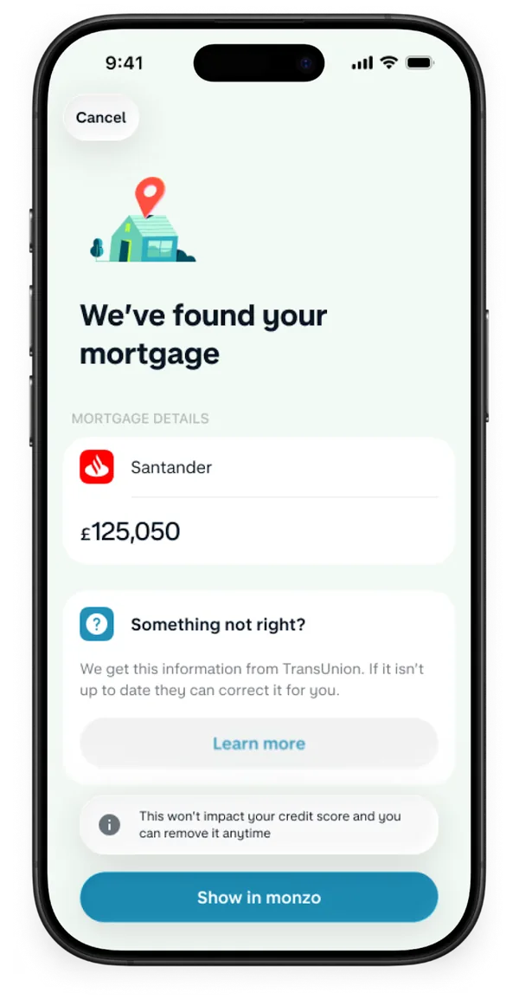
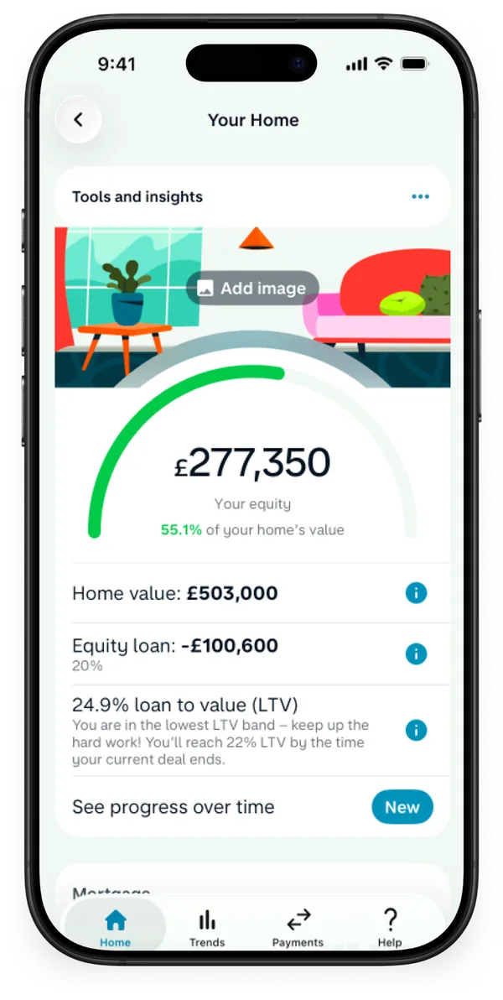
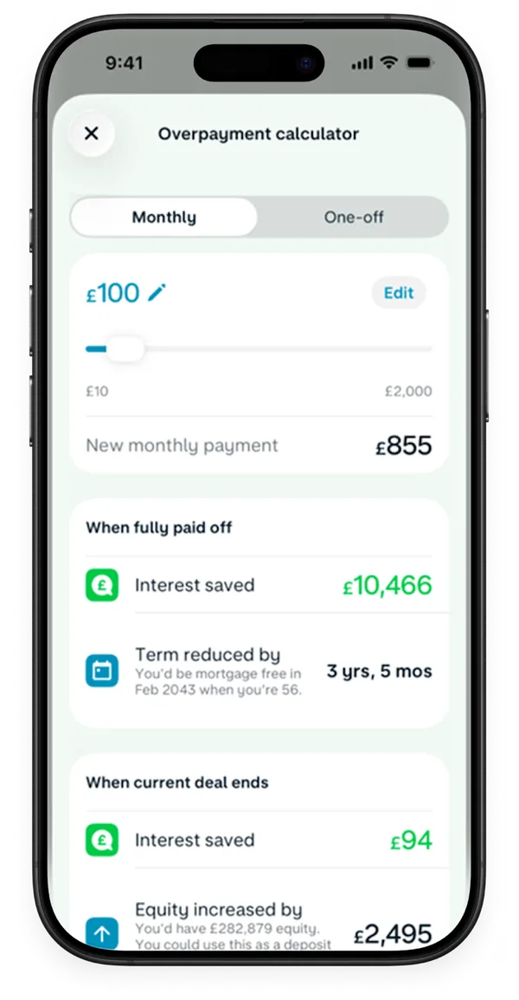
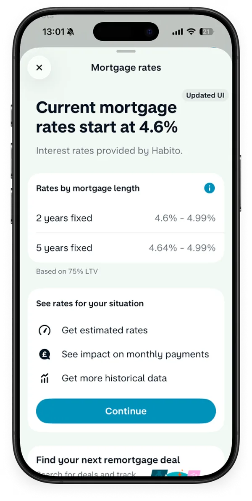
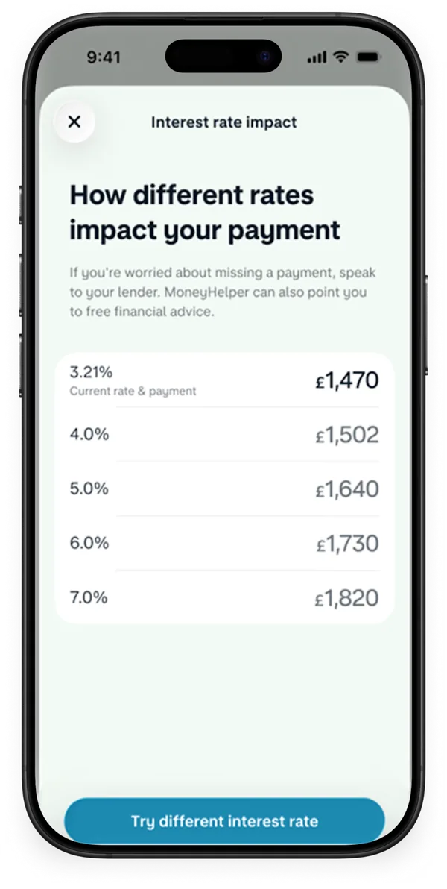
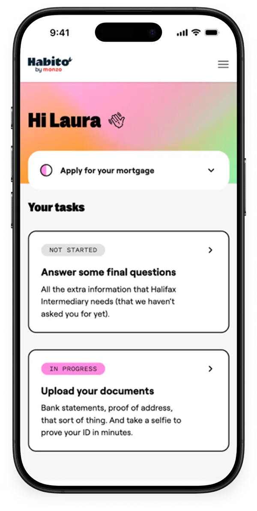

A clearer way to remortgage.
I led design from a broker pilot to integrating Habito: plan ahead, understand your options and get a real person to help.


- My role
- Lead Product Designer. Sole designer until Sep 2026
- Team
- Homeownership squad: product, engineering and research. Partners: Better.co.uk, then Habito’s advisers
- Timeline
- Mar 2024 – Oct 2026, in three phases, from research to launch and iteration
- What I did
- Customer research · vision workshop · referral and tracker design · onboarding · growth strategy · Habito MVP
Better timing starts with better information.
34% → 59% of all connections with a known dateMissed the Sept 2024 revenue run-rate goalTeam-level results across onboarding, optimisation and campaigns
The audience kept growing.
The product had to keep up.
550,000+ homeowners came to track their mortgage in Monzo. Seeing it was useful. Helping them act on it was the opportunity.
- 01 · Mar–Jun 2024
Research and Better pilot
Understand what homeowners need, then launch a trusted first referral journey.
- 02 · Jul 2024–2025
Learn what drives growth
Test indicative rates, improve the funnel and develop a distinct first-time buyer strategy.
- 03 · Apr–Oct 2026
Integrate the mortgage journey
After Monzo acquired Habito, bring key steps and adviser support closer to the Monzo app.
Customers tracking their mortgage, from Monzo’s public announcements (Apr 2025, Dec 2025, Mar 2026). This is the audience for the work, not an outcome of it. The line joins published figures.
Earn trust before asking for commitment.
I ran interviews with Research and a vision workshop, then shaped a referral to our broker partner, Better.co.uk.
March–April 2024
The barrier was confidence. People valued their broker, wanted time to prepare and needed to know a real person would help.
Ask when it’s easy.
Reach people when it matters.
Most connected mortgages didn’t tell us when the deal ended. So we asked in onboarding, right after people first saw their mortgage: one question, an “I don’t know” way out and a reminder they choose.
Rebuilt in code from the Figma files. The lender is anonymised; the balance and dates are placeholder figures from the designs. A team-level result, alongside optimisation and campaigns.
Give people value before they commit.
Referrals were behind forecast. So I designed a rate calculator that works even without a connected mortgage.
- WorkedThe calculator, with strong uptake.
- Didn’tFull lender offers. Unfamiliar lenders created hesitation, so we paused it.
- NextUnderstand the switching decision, and design a separate journey for first-time buyers.
A later version from my Figma files. Try the + and − in the filters: the LTV and monthly repayment update as you go. The lender is anonymised; figures are examples from the designs, not an offer.
From a referral to a journey in the app.
When Monzo acquired Habito ↗, I led the vision, design and MVP: fact-find, recommendations, adviser chat and progress, in the app.
Always clear
whose turn it is.
Nine stages, and the next step can sit with the customer, the adviser or the lender. One card changes with the journey: orange when you act, green when someone else is on it.
Rebuilt in code from my Figma MVP so you can see it move. It was in implementation when I left. Lender and adviser names are anonymised; the rate and amount are placeholder figures.
Four decisions that shaped the journey.
- 01
Trust before commitment.
- Situation
- People valued their broker and needed to know a real person would help.
- Call
- Lead with expert support. Explain who Better is and what’s shared. Let people leave, or come back later.
- Result
- 4.6/5 from 11:FS Pulse for the journey.
- 02
Ask for the date when it’s easy.
- Situation
- Remortgaging matters in the months before a deal ends, and we rarely knew when that was.
- Call
- One question in onboarding, with an “I don’t know” way out. The date triggers prompts later.
- Result
- 38% → 88% of new connections declared a date. A team result.
- 03
Value before a referral.
- Situation
- By July 2024, referrals were behind forecast.
- Call
- A rate calculator anyone could use. When lender offers didn’t work, we paused them.
- Result
- Strong uptake, but the revenue goal was still missed.
- 04
Always clear whose turn it is.
- Situation
- Nine stages, split across the customer, the adviser and the lender.
- Call
- One card that changes with the journey. Adviser chat clearly separate from Monzo Support.
- Result
- In implementation when I left in October 2026.
What I’d do differently: research the switching decision before optimising the funnel. We spent a year improving the way in before learning the barrier was the decision itself.
Shipped, and live
on monzo.com.
From connecting a mortgage to checking rates and applying with Habito.






Screens as published on monzo.com/features/see-your-mortgage ↗
Explore the experience,
one decision at a time.
Interactive screens from my Figma files, anonymised. The tracker and adviser chat were in implementation when I left.
Remortgage progress
Figma screen recreation.